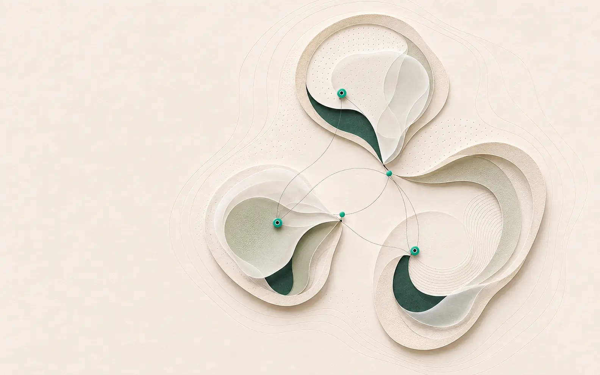

Company · WinVerse
WinVerse is the company. SerotoniX™ is the first flagship product.
WinVerse translates clinically originated neurotechnology into scalable, human-centred product systems for Asian and global healthcare markets.
Operating thesis
Prove the pathway before scaling the product.
Clinical originStart with a consequential, testable problem
Product disciplineEngineer repeatability, usability and traceability
Market translationBuild regulatory, manufacturing and adoption pathways

Shanghai · Company and execution
Toronto · Science and translation
Singapore · Regional strategy and partnerships